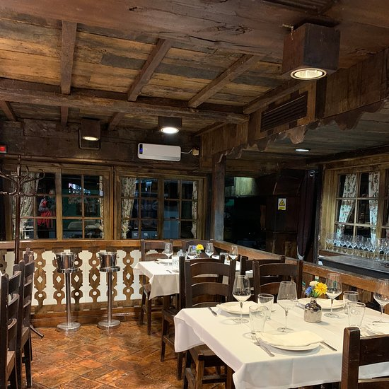
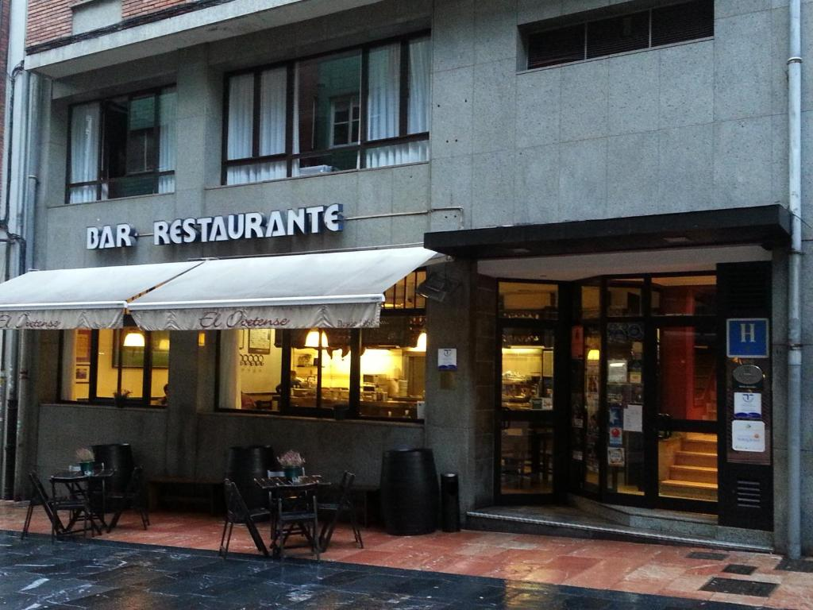

Public Transport

Oviedo boasts an efficient and well-maintained public transport system that cover the needs of residents and tourists. The city's bus network, operated by TUA (Transportes Unidos de Asturias), provides extensive coverage, connecting the city center with residential areas, commercial zones, and neighboring towns. The buses are known for their punctuality, cleanliness, and modern features such as free Wi-Fi and accessibility options for people with reduced mobility.
The main bus station, located near the city center, serves as a hub for both local and regional routes. Travelers can also find long-distance connections to other major cities in Spain, including Madrid and Barcelona. Tickets can be purchased onboard, at kiosks, or through mobile apps, making it easy to plan your journey. Public transport in Oviedo is not just a practical solution, it is also a sustainable choice, contributing to the city's efforts to reduce its carbon footprint.
Taxi Service

Oviedo taxi service offers a reliable and convenient mode of transportation for those who prefer a personalized travel. Taxis are readily available throughout the city, with numerous taxi ranks strategically located near popular landmarks, shopping centers, and transportation hubs. The fleet is modern, and drivers are known for their professionalism and local knowledge, ensuring that passengers reach their destinations quickly and safely.
Taxi fares in Oviedo are regulated, with standard rates displayed inside each vehicle. Additional charges may apply for luggage, late-night rides, or trips on public holidays, but these are clearly communicated to passengers. For added convenience, many taxi companies offer app-based booking services, allowing users to request rides, track their taxis, and even pay electronically.
Taxi contact is available in the contact section.
Important Public Parks


- Campo de San Francisco - This iconic park is Oviedo green heart, offering a serene escape in the midst of the bustling city. Spanning over 90,000 square meters, it features beautiful paths, shaded benches, and picturesque fountains that date back to the 19th century. The park's most notable attractions include the Mafalda statue, a favorite photo spot for visitors, and the duck pond, beloved by children. Campo de San Francisco is also home to a variety of flora, including ancient oak and chestnut trees, making it a peaceful retreat for nature lovers.
- Parque de Invierno - A paradise for outdoor enthusiasts, Parque de Invierno combines expansive green spaces with modern recreational facilities. This park is a hotspot for activities such as jogging, cycling, and family picnics. Its iconic bike lane, known as "La Senda Verde", connects the park to scenic rural trails, allowing visitors to explore the surrounding countryside. Additionally, the park hosts seasonal events, including outdoor yoga sessions and weekend markets, making it a vibrant community hub.
- La Pista Finlandesa - This hidden gem offers a peaceful escape with panoramic views of Oviedo amazing hillsides. Perfect for long walks or quiet reflection, the trail runs through a forested area, providing a natural cooling effect during warmer months. Its well-maintained path is popular among runners and dog walkers, and strategically placed benches allow visitors to rest and enjoy the scenery. It's an ideal spot for photography enthusiasts looking to capture the city's natural beauty.
Oviedo commitment to preserving green spaces is evident in the quality and accessibility of its parks. Whether you're seeking relaxation, exercise, or a place for family picnics, these parks offer something for everyone. Each park also reflects the city's dedication to sustainability, with eco-friendly initiatives such as recycling bins and educational programs about local flora and fauna.
Recommended Restaurants
El Raitán
Located in the heart of Oviedo, El Raitán offers a cozy and rustic atmosphere that transports you into the heart of Asturian gastronomy. Their specialty is the traditional fabada asturiana (Asturian bean stew), made with locally sourced ingredients and served with a glass of the best Asturian cider. Whether you're enjoying a family meal or a romantic evening, this restaurant offers a true taste of Asturias.
Location:Pl. Trascorrales, 6.
La Taberna del Zurdo
La Taberna del Zurdo offers a modern twist on traditional Spanish tapas. Known for its inventive dishes, the restaurant combines a vibrant atmosphere with exceptional culinary techniques. Don't miss their signature croquettes, grilled meats, and seafood paella. It's a popular spot among locals and tourists alike, where you can enjoy a lively ambiance and a glass of local cider.
Location: C. Cervantes, 27.
La Corte de Pelayo
If you're seeking a more refined dining experience, La Corte de Pelayo is the perfect choice. This elegant restaurant specializes in fresh seafood and fine wines. Their grilled lobsters and octopus dishes are particularly popular, offering a delicate balance of flavors. The restaurant's upscale interior and top-tier service make it ideal for special occasions.
Location: C. San Francisco, 21.
Recommended Accommodations
Hotel de la Reconquista
One of the most luxurious hotels in Oviedo, Hotel de la Reconquista is a 5-star establishment that combines classical elegance with modern amenities. This historic hotel, housed in a 16th-century building, offers spacious rooms, a full-service spa, and an excellent restaurant serving local delicacies. It is located just a short walk from the city's main attractions, making it the perfect choice for both leisure and business travelers.
Location: C. Gil de Jaz, 16.
NH Oviedo Principado
Located in the heart of Oviedo, NH Oviedo Principado offers modern, comfortable rooms at a reasonable price. It's perfect for travelers who want to explore the city on foot, as it's only a few minutes walk from key attractions such as the Cathedral of Oviedo and the historic Old Town. The hotel features excellent service, an on-site restaurant, and a fully equipped gym.
Location: C. San Francisco, 6.
Ovetense Hostel
If you're traveling on a budget, Ovetense Hostel is a great option. This modern hostel provides clean and simple rooms for a comfortable stay. The hostel has a warm and friendly atmosphere, and it's conveniently located near public transport, making it easy to explore the city. With affordable prices and a central location, it's perfect for backpackers and those on a low budget.
Location: C. de San Juan, 6.
Blue Zone Parking
Parking in Oviedo is made more organized and accessible through the Blue Zone system, which provides regulated short-term parking in high-demand areas. Designed to ensure parking availability, this system is particularly useful for quick visits, business visits, or accessing the city center.
Blue Zone parking operates on a time-limited basis, with clearly marked areas where drivers can park their vehicles. Payments are straightforward, with options including parking meters and a dedicated mobile app that allows users to pay and manage their parking remotely. This flexibility makes it easy to comply with regulations while saving time.
The system is strictly monitored to prevent misuse, and fines are issued for violations. However, the Blue Zone also provides benefits for residents, with discounted rates and reserved areas for local vehicles. By balancing accessibility with efficiency, Oviedo Blue Zone ensures a smooth parking experience for all.
More information is available in the official webpage.
City Cleaning Services
Oviedo is renowned for its cleanliness and well-maintained public spaces, thanks to an efficient and organized city cleaning service. This service is managed by EMULSA (Empresa Municipal de Servicios de Limpieza), which oversees street cleaning, waste collection, and environmental sanitation.
Waste Collection
The waste collection system in Oviedo is highly structured and eco-friendly. Residents and businesses are provided with designated containers for sorting recyclable materials such as paper, plastic, glass, and organic waste. These containers are strategically located across neighborhoods, ensuring easy access for everyone. Additionally, bulky waste like furniture and appliances can be picked up by request through the city's special collection service. Oviedo also operates recycling centers where residents can responsibly dispose of hazardous materials.
Oviedo actively engages its citizens in keeping the city clean through incentive programs. Residents who consistently separate their waste properly can earn rewards through the city's digital platform. These rewards can be redeemed for discounts on municipal services or local events, fostering a culture of environmental responsibility.
Oviedo efforts have been recognized on national and international levels. The city boasts a recycling rate significantly higher than the national average, and its composting program has been praised for its contribution to reducing landfill dependency. These achievements underscore Oviedo commitment to sustainability and serve as a model for other cities.
Street Cleaning
The streets of Oviedo are regularly cleaned using advanced equipment and environmentally friendly practices. Water trucks equipped with high-pressure hoses are deployed to wash sidewalks and remove dirt and grime, particularly in high-traffic areas such as the city center and markets. These operations often take place during the early morning hours to minimize disruption to daily activities. In addition to mechanical cleaning, workers manually sweep streets and empty public trash bins.
Oviedo's commitment to cleanliness extends beyond the streets. The cleaning service also maintains public parks, ensuring that green spaces remain pristine for everyone to enjoy. Educational campaigns are conducted to encourage residents and visitors to keep the city clean, emphasizing the importance of reducing litter and recycling.
By investing in modern technologies and sustainable practices, Oviedo has set a high standard for urban cleanliness, making it one of the cleanest and most environmentally conscious cities in Spain.